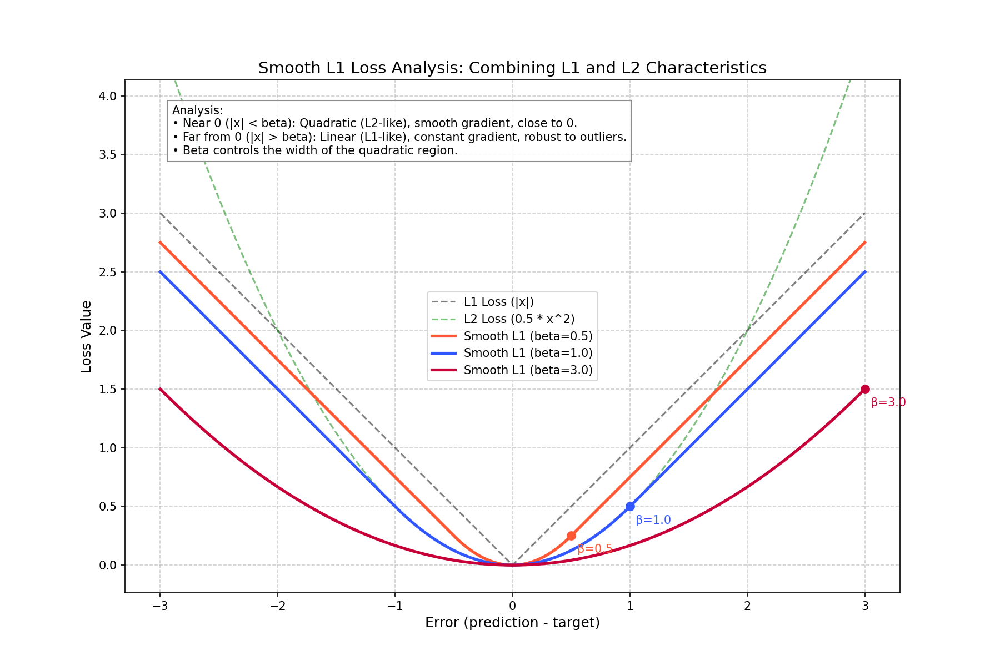

🔹Loss
PFLD原文Loss函数
\[\mathcal{L}:=\frac{1}{M} \sum_{m=1}^{M} \sum_{n=1}^{N}\left(\sum_{c=1}^{C} \omega_{n}^{c} \sum_{k=1}^{K}\left(1-\cos \theta_{n}^{k}\right)\right)\left\|\mathbf{d}_{n}^{m}\right\|_{2}^{2} .\]
没问题，我们把这两个问题拆解得非常细致，把代码里的变量名和论文里的数学符号一一对应起来。
(1) 代码输入参数详解
所有这些参数都是 PyTorch Tensor (张量) 类型，通常在 GPU 上进行计算。
| 代码参数名 | 数据类型 (Shape) | 含义 | 对应论文中的概念 |
|---|---|---|---|
attribute_gt |
(Batch_Size, N_attr)例如 (32, 6) |
属性标签 (Ground Truth)。 每一行代表一张人脸的属性。代码中 [:, 1:6] 取了后5列，通常对应论文中提到的：侧脸、正脸、抬头、低头、表情/遮挡等分类。 |
对应公式(2)中的 \(c\) (class)。 用来计算权重 \(\omega_{n}^{c}\)。 |
landmark_gt |
(Batch_Size, 98*2)例如 (32, 196) |
关键点坐标标签 (Ground Truth)。 人工标注的真实坐标 \([x_1, y_1, x_2, y_2...]\)。 |
对应公式(1)中的 \(\mathbf{x}_i\) 或 \(\mathbf{X}\)。 即真实的 2D Landmark。 |
euler_angle_gt |
(Batch_Size, 3)例如 (32, 3) |
欧拉角标签 (Ground Truth)。 真实的人脸姿态：[Yaw, Pitch, Roll]。 |
对应公式(2)中的 Ground Truth Angle。 用来和预测值相减计算 \(\theta\)。 |
angle |
(Batch_Size, 3) |
预测的欧拉角。 由 PFLD 的 Auxiliary Network (辅助网络) 输出的结果。 |
对应公式(2)中的 Estimated Angle。 辅助任务的输出。 |
landmarks |
(Batch_Size, 98*2) |
预测的关键点坐标。 由 PFLD 的 Backbone Network (主干网络) 输出的结果。 |
对应公式(1)中的 \(\mathbf{y}_i\) 或 \(\mathbf{Y}\)。 即 Prediction。 |
y_true |
同 landmark_gt |
通用变量名，在 smoothL1 和 wing_loss 函数中代表真实值。 |
同 landmark_gt。 |
y_pred |
同 landmarks |
通用变量名，在 smoothL1 和 wing_loss 函数中代表预测值。 |
同 landmarks。 |
(2) 原文中符号 \(\omega_{n}^{c}\) 和 \(\theta_{n}^{k}\) 的深度解析
这部分是 PFLD Loss 设计的灵魂，理解了下标和上标就理解了它的运作机制。
1. \(\omega_{n}^{c}\) (Omega) —— 属性平衡权重
原文公式片段：\(\sum_{c=1}^{C} \omega_n^c\)
- 含义： 这是一个加权系数，用来解决数据不平衡 (Data Imbalance) 问题。如果某个样本属于“稀有样本”（比如大侧脸，训练集中很少），这个系数就会很大，让网络多关注它；如果是“常见样本”（比如正脸），系数就小。
- \(c\) (Superscript 上标): 代表 Class (属性类别)。
- 论文中定义了多种属性类别：profile-face (侧脸), frontal-face (正脸), head-up (抬头), occlusion (遮挡) 等。
- 例如：\(c=1\) 代表侧脸，\(c=2\) 代表正脸。
- \(n\) (Subscript 下标):
- 严格数学定义： 在论文公式(1)中，\(n\) 代表第 \(n\) 个关键点 (Landmark)。
- 逻辑矛盾与解释： 你可能会问，“侧脸”是整张脸的属性，跟第 \(n\) 个鼻子上的点有什么关系？
- 实际操作： 虽然属性是整张脸的，但在计算 Loss 时，这个权重被乘到了这张脸的每一个关键点的误差上。
- 通俗理解： 对于第 \(m\) 张图片中的第 \(n\) 个关键点，如果这张图片属于类别 \(c\)，我们就给这个点的误差乘上权重 \(\omega\)。
2. \(\theta_{n}^{k}\) (Theta) —— 几何约束权重
原文公式片段：\(\sum_{k=1}^{K} (1 - \cos \theta_n^k)\)
- 含义： 这是一个几何惩罚项。它衡量的是预测姿态和真实姿态的偏差。偏差越大，Loss 越大，网络受到的惩罚越重。
- \(k\) (Superscript 上标): 代表 Euler Angle Dimension (欧拉角的维度)。
- 因为是三维空间，所以 \(K=3\)。
- \(k=1\): Yaw (摇头角度)
- \(k=2\): Pitch (点头角度)
- \(k=3\): Roll (歪头角度)
- \(n\) (Subscript 下标):
- 同上，虽然欧拉角也是整张脸的属性（你不能说鼻子的 Yaw 角和嘴巴的 Yaw 角不一样），但在公式中，这个惩罚项是加在每一个关键点 \(n\) 的 Loss 上的。
- \(\theta\) (Theta 本身): 代表 角度的差值 (Deviation)。
- 即：\(| \text{真实角度} - \text{预测角度} |\)。
- 公式用了 \((1 - \cos \theta)\)。
- 当预测完全准确，差值 \(\theta=0\)，\(\cos(0)=1\)，那么 \(1-1=0\)，惩罚为 0。
- 当预测偏差很大（比如差90度），\(\cos(90)=0\)，那么 \(1-0=1\)，惩罚变大。
总结公式 (2) 的物理意义
\[\mathcal{L} := \dots \underbrace{\omega_n^c}_{\text{如果是稀有脸，放大Loss}} \times \underbrace{\sum (1-\cos \theta_n^k)}_{\text{如果姿态估不准，放大Loss}} \times \underbrace{\| \mathbf{d}_n^m \|_2^2}_{\text{关键点坐标本身的L2误差}}\]
- 代码对应：
return torch.mean(weight_angle * weight_attribute * l2_distant) - 一句话总结： 如果一张脸是稀缺样本（\(\omega\)大），且辅助网络觉得姿态很难预测（\(\theta\)大），那么网络在回归这张脸的关键点坐标（\(d\)）时，如果出错了，会受到超级加倍的惩罚。
原版本 Loss 函数的 PyTorch 复现
源代码见loss_ori.py。
class PFLDLoss(nn.Module):
def __init__(self):
super(PFLDLoss, self).__init__()
def forward(self, attribute_gt, landmark_gt, euler_angle_gt, angle,
landmarks, train_batchsize):
'''
forward 的 Docstring
:param self: 说明
:param attribute_gt: 类型 torch.Tensor, 形状 (batch_size, n_attributes)包含每个样本属性的张量，例如性别、年龄
:param landmark_gt: 类型 torch.Tensor, 形状 (batch_size, n_landmarks * 2 )包含每个样本地标点的张量，例如(x1, y1, x2, y2, ..., xN, yN)
:param euler_angle_gt: 类型 torch.Tensor, 形状 (batch_size, 3)包含每个样本欧拉角的张量（俯仰角、偏航）角、滚转角
:param angle: 类型 torch.Tensor, 形状 (batch_size, 3)包含预测的欧拉角的张量
:param landmarks: 类型 torch.Tensor, 形状 (batch_size, n_landmarks * 2)包含预测的地标点的张量
:param train_batchsize: 类型 int, 训练时的批量大小
'''
weight_angle = torch.sum(1 - torch.cos(angle - euler_angle_gt), axis=1)
# 计算几何信息：Σ(1-cosθn^k) k=1,2,3
# 最终得到每张图片的角度权重，形状为 (batch_size, 1)
attributes_w_n = attribute_gt[:, 1:6].float()
# 计算属性权重矩阵，其中第1行到第5行分别表示侧脸、正脸、抬头、低头、表情/遮挡等属性。
# 其元素的数值为{0, 1}表示二分类，即“有无此属性”
mat_ratio = torch.mean(attributes_w_n, axis=0)
# 计算每个属性在当前批次中的平均值，亦或者者说频率
# 因为每个元素的值只能是0（没有）或1（有），因此平均值就代表了当前属性在样本批次中出现的频率
mat_ratio = torch.Tensor([
1.0 / (x) if x > 0 else train_batchsize for x in mat_ratio
]).to(device)
# 计算倒数权重，因为频率越低，要求惩罚的权重越大
# 如果这样不处理，网络会倾向于只学习好占多数的简单样本，而忽略少数困难样本，导致 loss 被简单样本主导。
weight_attribute = torch.sum(attributes_w_n.mul(mat_ratio), axis=1)
# .mul 不是矩阵乘法，而是带有广播机制的按元素相乘
# 例如，假设 attributes_w_n 的形状是 (batch_size, 5)，mat_ratio 的形状是 (1, 5)，则 mat_ratio 会被广播成 (batch_size, 5)，然后逐元素相乘。
# 结果就是，在属性矩阵中，如果一个样本具有某个属性，则该属性的标称值从原来的1变为该属性的倒数权重，从而增加了该样本在总损失中的贡献。
# 每个属性明码标价
# 然后，将这些加权后的属性值相加，得到每个样本的总属性权重。最终形状： (batch_size, 1)
# 这一行代码的总体作用就是，为当前 Batch 中的每一张图片，根据它包含的属性，累加计算出该图片的最终 Loss 权重，包含的困难属性越多，越稀有，这张图在计算Loss时所占的比重越大。
l2_distant = torch.sum(
(landmark_gt - landmarks) * (landmark_gt - landmarks), axis=1)
# 计算每个样本的地标点 L2 距离的平方和，形状为 (batch_size, 1)，每一行元素的形式为：
# x1²+y1²+x2²+y2²+...+xN²+yN²
return torch.mean(weight_angle * weight_attribute *
l2_distant), torch.mean(l2_distant)
# 这里同样不是矩阵乘法，而是按元素相乘，最终第一项得到完整的 Loss 函数值
# 最后求均值而不是求和，如果是求和的话，Loss 会随着 Batch Size 的增大而增大，导致超参数不稳定
# 为什么还要返回未加权的 L2 距离平方和的均值呢？这是给人看的，用于监控指标（Metric / Monitoring）。它反映了模型当前预测的坐标和真实坐标平均相差多少。因为第一个 Loss 被权重“污染”了，你无法通过它判断模型到底收敛没有。
# 也就是：如果只看第一个 Loss，你不知道 Loss 变大是因为模型变差
在这种情况下，Loss 函数的形式具体应该写为：
\[\mathcal{L}:=\frac{1}{M} \sum_{m=1}^{M}\left[ \underbrace{\left(\sum_{c=1}^{C} \omega_{m}^{c}\right)}_{\text{属性权重}} \cdot \underbrace{\left(\sum_{k=1}^{K}\left(1-\cos \theta_{m}^{k}\right)\right)}_{\text{几何信息}} \cdot \underbrace{\left(\sum_{n=1}^{N}\left\|\mathbf{d}_{n}^{m}\right\|_{2}^{2}\right)}_{关键点距离}\right]\]
SmoothL1
这是一种结合了 L1 Loss 和 L2 Loss 优点的损失函数。
\[\operatorname{SmoothL1}(x, y)=\left\{\begin{array}{ll}0.5(x-y)^{2}, & \text { if }|x-y|<1 \\|x-y|-0.5, & \text { otherwise }\end{array}\right.\]
代码中引入了参数\(\beta\)来控制两个区间切换的阈值，通用公式变形为：
\[\operatorname{loss}(x)=\left\{\begin{array}{lll}\frac{0.5 \cdot x^{2}}{\beta}, & \text { if }|x| \leq \beta & \text { (小误差区间) } \\|x|-0.5 \cdot \beta, & \text { if }|x|>\beta & \text { (大使用 } \mathrm{L} 2) \\\end{array}\right.\]
\(x = \text{mae} = |y_{\text{true}} - y_{\text{pred}}|\)
\(\text{loss}(x)\)在\(x = \beta\)处的函数值相同且一阶导数相同，保证了平滑过渡。

def smoothL1(y_true, y_pred, beta=1):
"""
very similar to the smooth_l1_loss from pytorch, but with
the extra beta parameter
"""
mae = torch.abs(y_true - y_pred)
loss = torch.sum(torch.where(mae > beta, mae - 0.5 * beta, 0.5 * mae**2 / beta), axis=-1)
# 大误差用L1 Loss：mae - 0.5 * beta，这部分的梯度是常数（1 或 -1），防止梯度爆炸。当碰到离群点（Outliers）时，不会因为误差非常大而产生巨大的梯度把模型参数打乱
# 小误差类似L2 Loss：0.5 * mae**2 / beta，这部分的梯度在原点附近是动态减小的（越来越接近 0），能够平滑趋近于零。L1 Loss 在 0 点不可导且梯度始终为 1，容易在最优解附近震荡无法收敛，Smooth L1 解决了这个问题。
return torch.mean(loss)
为什么要额外定义 smoothL1 函数？
SmoothL1: 则是一个经典的、稳健的基准（Baseline）。作者可能在早期调试、或者对比实验中，需要用到这个经典的 Loss 来验证模型结构本身有没有问题。如果模型连 SmoothL1 都跑不通，那就是网络结构 bug；如果 SmoothL1 能跑通但精度不够，再换用高级 Loss（Wing / PFLD Loss）。
Wing Loss
Wing Loss 是专门为人脸关键点检测设计的一种损失函数，旨在更好地处理小误差，同时对大误差保持鲁棒性。它通过对误差进行非线性变换，使得小误差部分的梯度更大，从而促进模型更精确地拟合关键点位置。形式结构上与 SmoothL1 类似，但在小误差区间采用了对数函数，进一步增强了对小误差的敏感性。
def wing_loss(y_true, y_pred, w=10.0, epsilon=2.0, N_LANDMARK=106):
y_pred = y_pred.reshape(-1, N_LANDMARK, 2)
y_true = y_true.reshape(-1, N_LANDMARK, 2)
# 将输入数据恢复成标准的集合形状
# 神经网络的输出通常是摊平的一维向量，形状为 (batch_size, N_LANDMARK * 2)
# 本操作将其重新调整为 (batch_size, N_LANDMARK, 2)
x = y_true - y_pred
c = w * (1.0 - math.log(1.0 + w / epsilon))
absolute_x = torch.abs(x)
# 连续性常数：C = w[1-ln(1+w/ε)]
losses = torch.where(w > absolute_x,
w * torch.log(1.0 + absolute_x / epsilon),
absolute_x - c)
# 小误差区间(w > |x|)：wln(1+|x|/ε)，类似于 L2 Loss，在原点附近平滑收敛
# 大误差区间(|x| >= w)：|x| - C，类似于 L1 Loss，防止梯度爆炸（离群点）
loss = torch.mean(torch.sum(losses, axis=[1, 2]), axis=0)
# torch.sum(losses, axis=[1, 2]): 沿着第1维和第2维求和，即得到每一张图片的总误差
# torch.mean(..., axis=0): 最后对所有图片的总误差求均值，得到最终的 Loss 值
return loss
\[\operatorname{WingLoss}(x)=\left\{\begin{array}{ll}\omega \ln \left(1 + \left|x\right|/\omega \right), & \text { if }|x|<\omega \\|x| - C, & \text { otherwise }\end{array}\right.\]
\[C = \omega[1-\ln\left(1+\omega/\epsilon \right)]\]